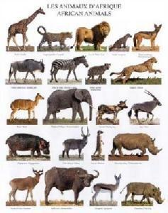

基本含义
动物是多细胞真核生命体中的一大类群，但是不同于微生物。
动物是不能将无机物合成有机物，只能以有机物为食物，会并且靠吃东西，由细胞构成，细胞有细胞核，没有细胞壁，会动，基质，的一类生命体。
因此动物具有与植物不同的形态结构和生理功能，以进行摄食、消化、吸收、呼吸、循环、排泄、感觉、运动和繁殖生命活动。
动物学根据自然界动物的形态、身体内部构造、胚胎发育的特点、生理习性、生活的地理环境等特征，将特征相同或相似的动物归为同一类。
主要分为脊索动物和无脊索动物两大类；根据水生还是陆生，可将它们分为水生动物和陆生动物；根据有没有羽毛，可将它们分为有羽毛的动物和没有羽毛的动物；根据体内有无脊柱，我们可以将所有的动物分为脊椎动物和无脊椎动物两大类。
原始生命出现后，随着生存环境的变化，千百万物种不断地出现、消亡，只有能适应环境变化的物种幸存下来并繁衍至今。这种物种不断演化的过程在生物学上被称为进化。
动物是生物的一个主要类群，称为动物界（Animalia）。
它们能够对环境作出反应并移动，捕食其他生物。根据当前遗传学研究结果，动物的祖先应是来自于多种原生生物的集合，然后进行细胞分化，而不是来自一个多核原生生物。
以有性生殖进行繁殖的后生动物，一生可被人为的划分为：胚前发育，胚胎发育和胚后发育三个阶段。动物的身体的基本结构在发育过程中固定下来，特别是发育早期的胚胎时期，也有一些后来要经历变态过程。
若两不同种的动物具有相同的祖先，它们在胚胎发育阶段会显示出一些共同点。但当进入胚后发育阶段之后，为了适应环境，它们会各自发展出一些特别的器官或功能。